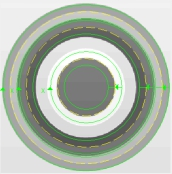
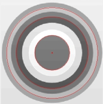
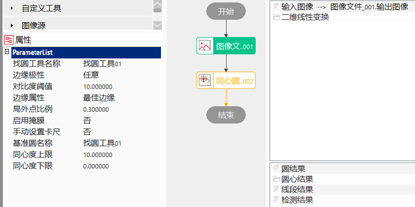
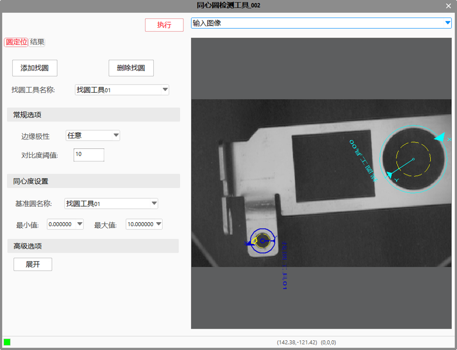
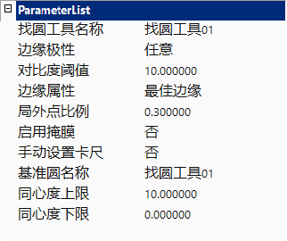
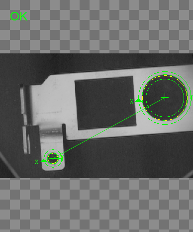
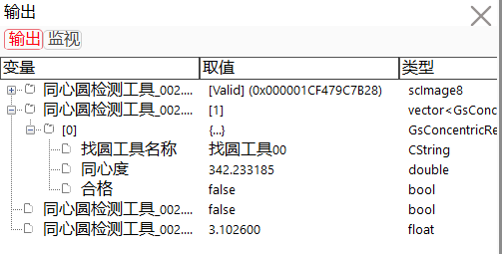

同心圆检测工具用来进行同心圆的检测，其应用效果如图1所示。
 
同心圆检测工具主要用来检测圆环工具的同心度参量是否满足规格要求。
使用找圆工具获取图像中的圆形，计算每个圆与基准圆的同心度。同心度越低，表示两圆的圆心距离越近，同心性越好。当两圆完全重合时，同心度为零。

打开高级界面，选择图像中的圆用于计算同心度。


找圆工具名称
选择列表中的找圆工具，参数列表进行相应更新。
找圆工具设置参数，请参考找圆工具。
基准圆名称
选择圆列表中的某个圆作为基准圆，其他圆与其进行比较，计算同心度。
同心度上下限
对于输出参数检测结果的同心度的有效范围进行设定，上限/下限的取值范围为[0.000000, 999999.999999]，另可设置为"–.——“,表示对上限或下限不进行限定。
使用同心度上限或/和同心度下限对检测结果中同心度的有效范围进行设定后，执行此工具。
当检测结果中所有同心度数值都在设定的上下限范围内时，显示工具执行结果成功；否则，显示工具执行结果失败。


| 注释事项 |
|---|
| 边缘极性、对比度阈值、边缘属性、局外点比例、启动掩膜和手动设置卡尺参数修改时，都是针对单个找圆卡尺(找圆工具名称参数所选择的找圆卡尺)修改的。例如，设置其中一个找圆工具的手动设置模式参数时，需要将找圆工具名称参数设置为对应要修改的找圆工具序号，然后将手动设置卡尺参数设置为“是/否”，即可完成该找圆工具手动模式的设置。 |
| 参数名称 | 参数说明 |
|---|---|
| 输入图像 | 显示待检测的图像，输入图像宽度、高度、像素大小，同图像窗口的输入图像参数。 |
| 二维线性变换 | 目标相对于模板的平移、旋转、缩放变换。 |
| 找圆工具名称 | 找圆工具的序号名称。 |
| 边缘极性 | 边缘极性是指图像边缘灰度级的过渡形式，分为3种，亮到暗、暗到亮和任意。 |
| 对比度阈值 | 卡尺工具默认只采用对比度评价分数，即按照边缘信号的强度来评分，输出边缘最强的点。对比度阈值的取值范围是0~255。 |
| 边缘属性 | 在查找区域内，卡尺根据不同的边缘属性，确定图像边缘的精确位置。卡尺工具的边缘属性有3种，最佳边缘、第一条边缘和最后一条边缘。最佳边缘是指在查找区域内，图像边缘相邻两侧灰度值相差最大的边缘； 第一条边缘是指在查找区域内，沿着卡尺Y轴的正方向，符合边缘极性的第一条图像边缘；最后一条边缘是指在查找区域内，沿着卡尺Y轴的正方向，符合边缘极性的最后一条图像边缘； |
| 局外点比例 | 局外点就是偏离曲线较远的点。局外点比例即不参与直线拟合的点的比例，取值范围是0~0.5。 |
| 启动掩膜 | 掩膜设置是指在模板训练过程中，屏蔽掉不参与模式训练的区域，减少参与模式训练的几何特征。 |
| 手动设置卡尺 | 选择“是”，支持手动设置卡尺参数，鼠标右键点击卡尺，在弹出的对话框中可以改变卡尺参数；选择“否”，不支持手动设置卡尺参数。 |
| 基准圆名称 | 作为基准圆的找圆工具的序号名称。 |
| 同心度上限 | 同心度上限指其它待检测圆圆心距基准圆圆心距离的最大值。其它待检测圆圆心与基准圆圆心的距离在同心度上限和同心度下限之间时，认为是同心圆。 |
| 同心度下限 | 同心度下限指其它待检测圆圆心距基准圆圆心距离的最小值。 其它待检测圆圆心与基准圆圆心的距离在同心度上限和同心度下限之间时，认为是同心圆。 |
| 查找区域 | 图像中参与查找的区域。 |
| 高级界面 | 有 |
| 找圆工具名称 | 找圆工具的序号名称，同属性窗口的找圆工具名称参数。 |
| 边缘极性 | 边缘极性是指图像边缘灰度级的过渡形式，分为3种，亮到暗、暗到亮和任意，同属性窗口的边缘极性参数。 |
| 对比度阈值 | 卡尺工具默认只采用对比度评价分数，即按照边缘信号的强度来评分，输出边缘最强的点。对比度阈值的取值范围是0~255，同属性窗口的对比度阈值参数。 |
| 边缘属性 | 在查找区域内，卡尺根据不同的边缘属性，确定图像边缘的精确位置。卡尺工具的边缘属性有3种，最佳边缘、第一条边缘和最后一条边缘，同属性窗口的边缘属性参数。 |
| 局外点比例 | 局外点就是偏离曲线较远的点。局外点比例即不参与直线拟合的点的比例，取值范围是0~0.5，同属性窗口的局外点比例参数。 |
| 启动掩膜 | 掩膜设置是指在模板训练过程中，屏蔽掉不参与模式训练的区域，减少参与模式训练的几何特征，同属性窗口的启动掩膜参数。 |
| 手动设置卡尺 | 选择“是”，支持手动设置卡尺参数，鼠标右键点击卡尺，在弹出的对话框中可以改变卡尺参数；选择“否”，不支持手动设置卡尺参数，同属性窗口的手动设置卡尺参数。 |
| 基准圆名称 | 作为基准圆的找圆工具的序号名称，同属性窗口的基准圆名称参数。 |
| 同心度上限 | 指其它待检测圆圆心距基准圆圆心距离的最大值，同属性窗口的同心度上限参数。 |
| 同心度下限 | 指其它待检测圆圆心距基准圆圆心距离的最小值，同属性窗口的同心度下限参数。 |
| 添加找圆 | 添加找圆工具，点击添加找圆按钮时，在弹出的添加找圆对话框中可以修改要添加找圆工具的名称。 |
| 删除找圆 | 删除找圆工具，删除时默认是按添加的顺序删除，如果鼠标选中其中一个找圆工具，则删除鼠标选中的找圆工具。 |
| 参数名称 | 参数说明 |
|---|---|
| 输入图像 | 显示待检测的图像，输入图像宽度、高度、像素大小。 |
| 检测结果 | 输出检测结果，包括对应的找圆工具名称、同心度及是否合格的信息。 |
| 圆结果 | 输出同心圆的检测结果，供后序工具使用，同图像窗口的圆结果参数。 |
| 圆心结果 | 输出检测圆的圆心，供后序工具使用，同图像窗口的圆心结果参数。 |
| 线段结果 | 输出基准圆圆心与其它检测圆圆心的连线，同图像窗口的线段结果参数。 |
| 执行结果 | 显示工具执行结果，执行成功在结果窗口显示“OK”，执行失败在结果窗口显示“NG。 |
| 执行时间 | 工具执行时间。 |
参见“\Samples\同心圆检测工具.gvp”。